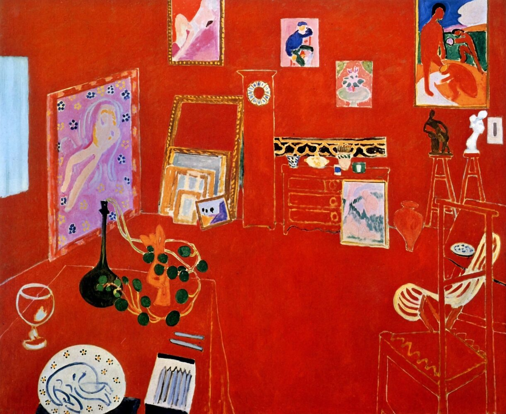
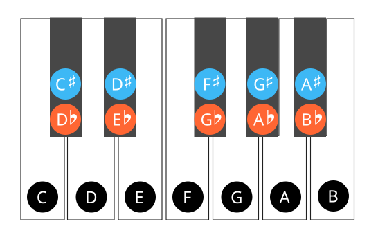

1. 什么是音阶
1. 什么是音阶
以钢琴键盘为代表的现代西方音乐理论，是以八度之内的12个为基石构筑而成的。

这12个音符就好比一盒拥有12种颜色的彩色铅笔。创作者将这12种色彩排列交叠，最终在听觉画布上绘就名为“乐曲”的艺术画卷。然而在实际作曲时，我们绝非一定要把这12种颜色一股脑全部涂抹上去，许多乐曲往往会刻意略过其中的某些音符。 特别是在以循环（Loop）为灵魂的电子音乐中，常常反复使用极少数固定音符，以此构筑极简克制的黑白灰冷冽世界……
反之，在某些追求繁复华丽的音乐风格中，音乐人则会将12个音符如同万花筒般轮番倾泻而出，编织出浓烈绚烂的视听盛宴：
从12个音符中精心抽选出一部分音来构筑乐曲，不同的音符取舍组合，将直接催生出截然不同的音乐意境与情绪色彩。这与绘画艺术如出一辙——选用怎样的色彩阵列，直接定格了整幅画面的基调：



仔细想来颇具哲理：在英语中，色彩的“色调”被称为 Tone，声音的“音调 / 音色”同样被称为 Tone。绘画与音乐在此处共享着惊人的共通审美通感。
像这样，为了特定审美目标而精心挑选并按顺序排列的一组音符阵列，在音乐学中被称为音阶（Scale）。
 “音阶”范例之一
“音阶”范例之一
上面是将钢琴所有白键抽选出来按序排列的形态。很多人平日习以为常，但实际上这串“Do-Re-Mi-Fa-Sol-La-Si”，正是从12个半音中千里挑一选拔出的“7人首发国家队阵容”。
音阶 (Scale) : 将一组特定音符按音高梯级顺序排列而成的集合。
在音乐理论中，通常习惯在键盘或五线谱上，由低到高逐级陈列这组选拔成员。音阶唱到第七音之后便会在高八度再次回到主音开启新一轮循环，因此在展示音阶时，通常只需展示一个完整八度即可：

在主流现代流行音乐中，存在一条核心通则：在同一个具体的音乐乐段中，所有乐器声部与人声默认共享并依托同一个音阶展开演奏。乐曲在段落推进时虽然可以换用不同的新音阶，但在切换瞬间，所有声部同样是协同整体转场。在同一时刻让不同声部演奏两套完全冲突的异调音阶，极易引发灾难性的浑浊碰撞，属于极度高深的先锋实验手法。
暂且抛开晦涩的学术定义，让我们直接用肉耳来亲身体验：仅仅是选拔的音阶不同，乐曲的听觉情绪究竟会发生何等惊人的蜕变！

音阶示范①：自然大音阶

这是纯以 Do-Re-Mi-Fa-Sol-La-Si 这7个白键谱写的一段微型小曲。为了排除真实乐器音色自带的丰富情感干扰，我们特意采用了极简的8位游戏机声音。整段旋律透着纯粹的明朗、坦荡与快活。
音阶示范②：自然小音阶

哪怕依然只使用这7个白键，只要将听觉引力重心转移到“La”音之上，音响色彩便会瞬间逆转。仅仅是中心的微调，刚才的明朗瞬间烟消云散，取而代之的是深沉、忧伤与冷峻的暗夜气质。
音阶示范③：阿拉伯 / 中东民族音阶

这次我们在阵列中引入了黑键。闭上双眼倾听，脑海中是否立刻浮现出金字塔、泰姬陵、荒漠绿洲等浓郁的异域风情？这正是广泛流传于印度、阿拉伯等中东传统民族音乐中的标志性音阶。无论是在游戏配乐还是纪录片中，只要这类音阶一响，那种神秘的异国画面感便会瞬间被唤醒。
这揭示了一个有趣的认知心理现象：即使是从未学过任何乐理的普通大众，其肉耳在潜意识中早已牢固记住了各类音阶的听觉特征。这种条件反射，源自音阶独特的音程排列，以及长年累月视听文化体验在大脑中建立的深层联想。
音阶示范④：全音阶（Whole-tone Scale）
音阶的成员数量并非必须严格固定为7个。这次我们挑选6个音符：

耳边瞬间传来一种光怪陆离的悬浮失重感，仿佛坠入了一座无休无止的奇幻迷宫，透着诡谲与不安。在影视配乐中，当主角陷入催眠幻觉、时空穿越或悬疑梦境时，阶（Whole-tone Scale）正是历代配乐大师最钟爱的秘密武器。
由此可见，挑选怎样的音符组成音阶，直接决定了整首乐曲的情感航向。如果拿着音阶①企图表现撕心裂肺的深渊绝望，难度堪比登天；而企图用音阶④烘托温馨欢快的儿童日常，同样南辕北辙。通晓各类音阶的性格图谱，是每一位专业作曲家不可或缺的看家本领。
音乐理论是在凭空搞“主观印象论”吗？
读到这里，或许有人会犯嘀咕：“怎么突然开始讨论‘哀伤’、‘诡异’这类玄学主观印象了？这和我心目中严谨理性的‘理论’好像不太一样啊……” 但必须强调的是：我们绝非在“凭主观印象信口开河”，而是在严肃研究声音引发人类心理审美印象的客观规律——两者有着本质的云泥之别。音乐之所以具备震撼人心的力量，正在于它能定向唤起人类的情绪共鸣。研究何种声音排列能够稳定激发出何种情绪体验，正是实用音乐理论不可动摇的崇高使命。
尽管在微观实战中，速度、音色配器、旋律走位等变量会进一步修饰整体质感，且特定音阶引发的听觉联想是否百分之百属于全人类的先天生理机制在学界仍有激烈探讨[87]；但在当今主流现代流行文化圈内，这套情绪映射系统早已建立起高度稳固的普遍共识。直面这种实战心理效用，音乐理论才能真正爆发巨大的创作战斗力。
2. 大调与小调（Major and Minor）
尽管世间的音阶千姿百态，但在现代流行音乐的浩瀚版图中，占据绝对统治级垄断地位的，正是开篇展示的以“Do”为主音的“Do-Re-Mi-Fa-Sol-La-Si”，以及以“La”为主音的“La-Si-Do-Re-Mi-Fa-Sol”：
音阶②（自然小音阶）：
你是否曾由衷产生过这样的疑问：现代键盘乐器为何非要设计成“7个白键加5个黑键”这样看似极度不平等的怪异布局？为什么不是均等的6对6？ 答案令人恍然大悟：现代键盘的设计，正是专门为了最大化方便弹奏这两套核心音阶而量身定制的！ 乐器制造先驱们为了让演奏者能够行云流水、一顺到底地弹奏这套最常用的音阶，特意将这7颗核心选拔音符整齐划一地摆放在触手可及的最前排，构成了宽大平整的白键。
不仅如此：无论是“Do-Re-Mi”还是“A-B-C-D-E-F-G”，人类原本只给白键上的这7个核心音分配了神圣独立的专属命名，而黑键只能委屈地充当“挂着升降号尾巴的附庸补丁”：


原本明明可以把 H、I、J、K、L 分配给黑键，历史却没有这么做。五线谱记谱体系同样如此——五条线与四个间专属为这7个音保留专座，任何黑键音必须临时画上升降号才能跻身其中：

换句话说：早在现代键盘形态与五线谱体系最终定型之前，基于这7个自然音构筑的音乐就已经彻底征服并统治了欧洲市场！ 为了能最顺畅地演奏它、最简练地在纸上记录它，乐器工匠与记谱学者才不约而同地完成了这一偏向性的设计。这套音阶，正是西方音乐文明史当之无愧的绝对王者。 即便在21世纪的今天，这套以白键为代表的自然音阶依然稳坐全球商业流行音乐的最核心王座。
两大核心音阶的正式命名
最后，让我们正式揭晓这两大统治级音阶的国际标准大名： 以 Do 为起点展开的“Do-Re-Mi-Fa-Sol-La-Si”，正式命名为大调音阶（Major Scale，大音阶 / 长音阶）； 以 La 为起点展开的“La-Si-Do-Re-Mi-Fa-Sol”，正式命名为小调音阶（Minor Scale，小音阶 / 短音阶）。
小调音阶（Minor Scale）：
大调（Major）与小调（Minor）——在音乐创作的起步征程中，比起盲目尝试各种光怪陆离的冷僻音阶，将大调与小调这两大巨擎彻底吃透玩熟，才是最扎实、收益最高的黄金捷径。整个现代音乐理论大厦，正是由此出发向星辰大海全面铺展开来的！
核心小结
- 音阶（Scale）是将整首乐曲所选拔使用的核心音符梯级罗列的集合。
- 选拔的音阶形态从底层直接决定并锁定了乐曲的大致情感基调。
- 音阶引发的艺术听觉印象，既源自其内部音程构架的物理特性，也深深扎根于特定地域文化长期的听觉历史沉淀。
- 在西方音乐传统及现代流行乐中，“大调音阶（Major Scale）”与“小调音阶（Minor Scale）”占据着绝对的核心统治地位。